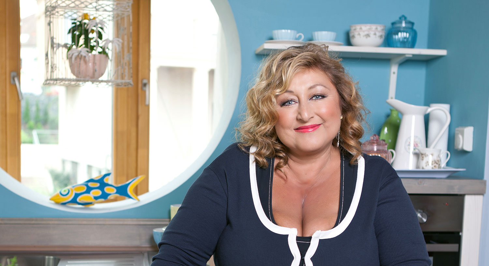

Halina Pawlowská se narodila v Praze jako jediná dcera ukrajinského emigračního básníka Vasila Kločuraka který pocházel z Podkarpatské Rusi a středoškolské učitelky Herrové. Studovala na gymnáziu a následně studovala scénáristiku na FAMU.
Je vdova a má dvě děti, dceru Natálii (* 1981) a syna Petra (* 1986).
Živí se jako spisovatelka, herečka a redaktorka.

černá zeštíhluje
UwU
glutaman sodný
zdroje